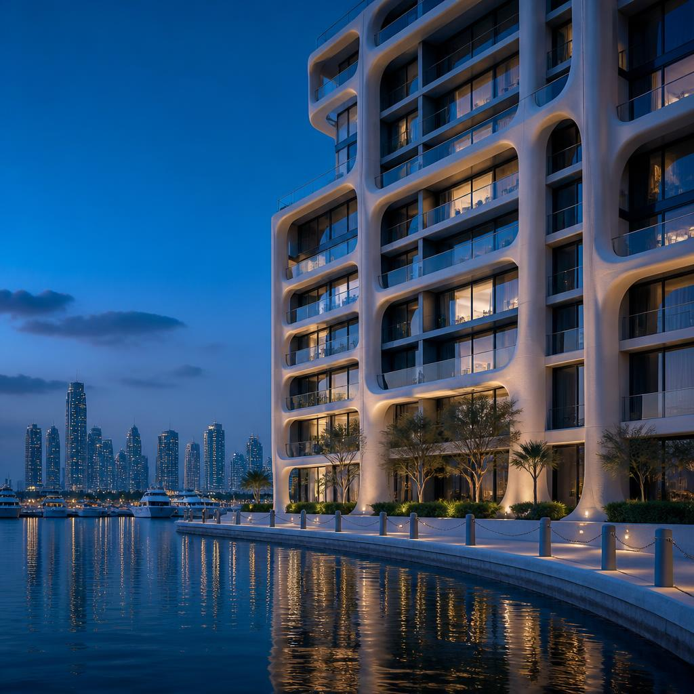
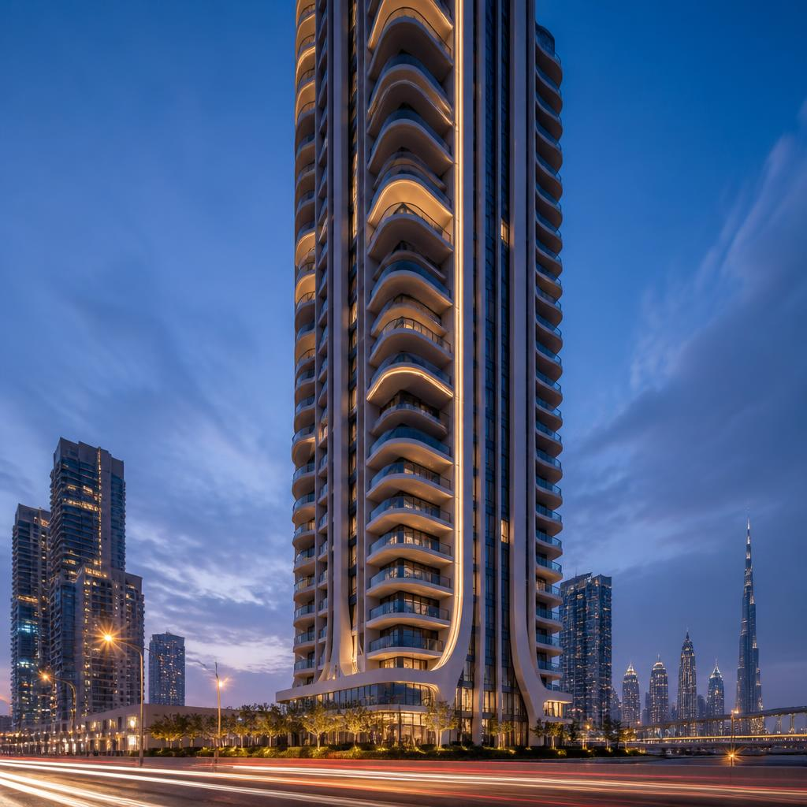
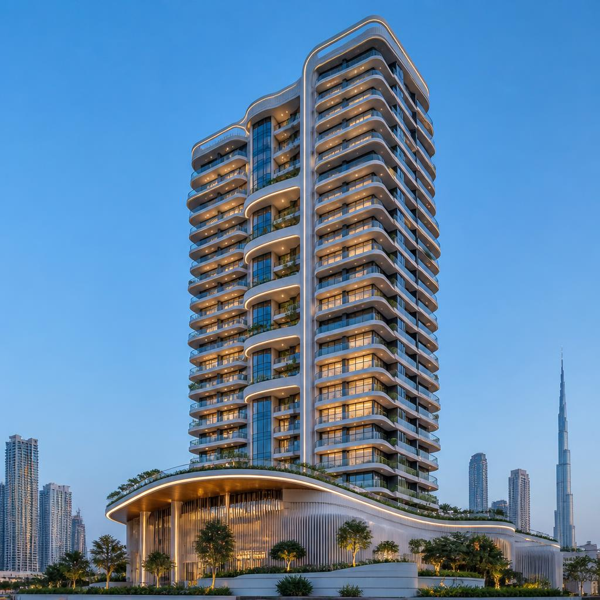
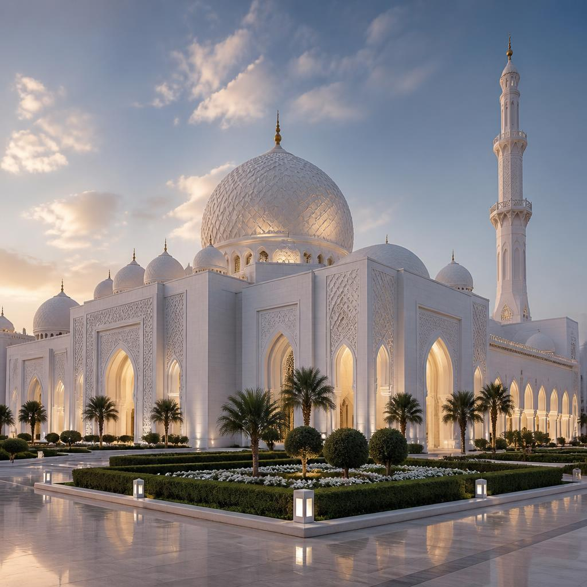

ASGRC delivers engineered GRC, GRP and GRG solutions to some of the UAE’s most iconic developments. Below are selected projects showcasing our craftsmanship and technical excellence.

GFRC cladding system covering 280,000 m² including podium structures.

Prestigious GFRC façade system with 13,000 m² of engineered cladding.

GFRC cladding system covering 180,000 m² including podiums.

GFRC façade system showcasing elegant architectural detailing.